Риба-хижак (Рибожер)
Передмова:
Ми створимо гру Рибожер. Керуйте великою хижою рибиною так, щоб вона спіймала усю здобич, яка плаває поруч.
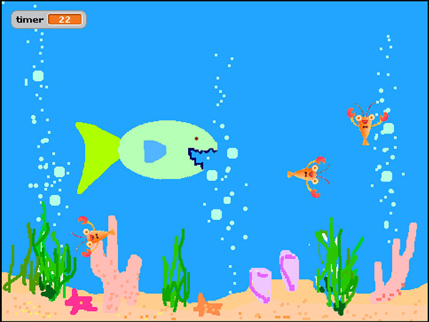Крок 1: Створення спрайта, який змінює образи.
Давайте створимо голодну, ненажерливу рибину, що плаває в морі.
- Створи новий проект у Скертч.
- Обери Сцену, потім вибери "Нове тло" та імпортуй картинку "під водою" з папки Природа (nature/underwater). Видали порожній фон.
- Створи нового персонажа (голодна-риба.png з папки Resources), і назви його "Голодна риба" або просто "Рибожер". Видали кота.
- Щоб упевнитись, що риба рухається лише ліворуч-праворуч натисни кнопку "тип обертання тільки з ліва на право" у полі інформації про спрайт: 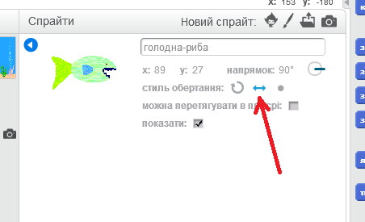
- Тепер створи скрипт для Голодної риби, за допомогою якого вона рухатиметься слідуючи руху мишки. 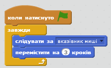
Протестуй свій проект
Натисни на значок із зеленим прапорцем. Переміщай курсор по морю. Чи слідує риба за курсором?
Що стається, коли ти перестаєш переміщати курсор і риба наздоганяє його? На що це схоже? Чому так відбувається?
- Можна припинити хаотичне обертання рибини, якщо дозволити її рух на певній відстані від вказівника миші (блок "відстань до" у вкладці Датчики). 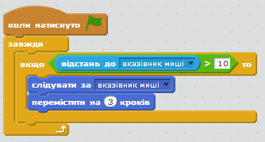
Збережи свій проект.
Спробуй
Якщо захочете, ви можете спробувати прописувати різну відстань у скрипті. Як це впливає на рух рибини? Змініть "відстань до" на >100 або на >1. Змініть кількість кроків переміщення на 20 або на 1 чи 0.
Крок 2: Створення здобичі
- Створи новий спрайт, обравши у папці Тварини (Animals) відповідне зображення, наприклад, лобстера. Перейменуй його на Здобич.
- Зменши його за допомогою кнопки зменшення розмірів спрайту.
- Створи скрипт, за яким здобич буде рухатись в морі. Необхідно, щоб здобич рухалась випадковим чином, тож хай лобстер спочатку рухається вперед, потім несподівано поверне вліво чи вправо, потім повторить це. 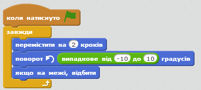
Протестуй свій проект
Натисни на зелений прапорець і подивись, як рухається здобич.
Чи рухається спрайт так, як ви очікували? Чи реалістично це виглядає?
Поки що Голодна рибина ніяк не взаємодіє зі здобиччю. У наступному кроці ми це виправимо.
Спробуй
Змінювати числа у блоці "випадкове від до". Як це впливає на рух здобичі?
Яка функція блоку "якщо границя, відбити?" Видали цей блок і подивись, що відбуватиметься.
Крок 3: Голодна рибина пожирає здобич.
Тепер ми зробимо так, щоб Голодна рибина з'їдала здобич! Коли Голодна рибина спіймала ротом здобич, повинні відбуватись дві речі:
- Голодна рибина повинна закрити рота, видавши при цьому звук "чавкання".
- Здобич повинна щезнути, а через кілька секунд з'явитись знову.
- Спершу зробимо так, щоб здобич щезала, коли її торкнеться Голодна рибина, а потім знову з'являлась через 3 секунди. У скрипті здобичі скористаємось блоком "доторкається" вкладки Датчики, щоб з'ясувати, чи торкнулась Голодна рибина здобичі. 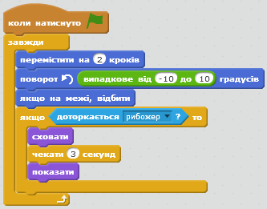
Протестуй свій проект
Запустіть гру знову і подумай, чи все у ній в порядку.
Зауважте, що здобич зникає незалежно від того, як вона торкнеться рибини. Рибина ж може почекати 3 секунди і з'їсти здобич в той же момент, коли та з'явиться – це нечесно!
- Як же зробити так, щоб здобич щезала тоді, коли риба торкнеться її ротом? Можна використати блок "доторкається кольору" і з'ясувати, чи торкнулась здобич чорних зубів Голодної риби. Для цього додайте до перевірки блок "доторкається кольору", клікніть на блок колір, а потім клікніть на зуби рибини. 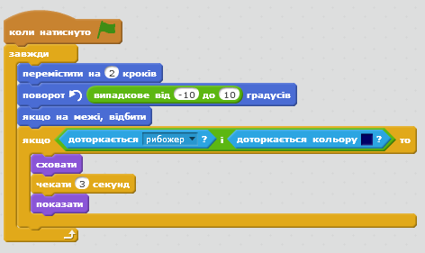
- Потім можна зробити так, щоб здобич допливала до якоїсь випадкової точки на екрані перед тим, як знову з'явитися, за допомогою блоку "переміститись в" і присвоєння випадкових значень х та у.
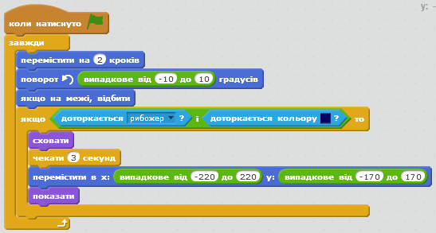
Протестуй свій проект
Знову запустіть гру.
Здобич зникає, коли торкається рота Голодної риби? Чи з'являється потім здобич у випадковій точці екрану, а не втому ж місці, де її з'їли?
- Голодна рибина повинна знати, що вона когось з'їла для того, щоб змінити образ. Для цього здобич повинна повідомити, що її з'їли перед тим, як щезнути, за допомогою блоку "оповістити" вкладки Керувати. 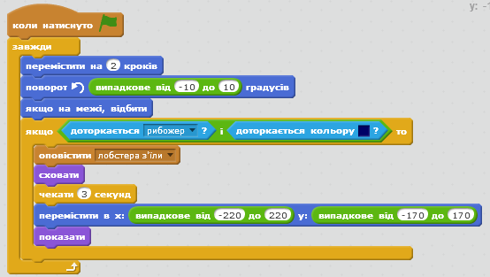
- Тепер потрібно зробити так, щоб Голодна рибина відповідала на повідомлення "лобстера з'їли" клацанням щелеп. Додайте образ клацання щелеп (малюнок "зуби-закриті") до спрайту Голодної риби.
- Потім додайте новий скрипт, щоб Голодна риба могла відповідати на повідомлення здобичі. Цей скрипт змусить рибину "почавкати", клацнути щелепами, трохи зачекати і повернутись до свого початкового вигляду. 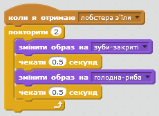
Тепер наша Голодна рибина готова їсти, тож наповнимо море здобиччю. Натисніть правою кнопкою мишки на спрайт здобичі й продублюйте його кілька разів.
Протестуй свій проект
Натисни на зелени прапорець.
Чи їсть Голодна рибина здобич? Чи їсть вона усіх спрайтів, що належать до здобичі?
Над цим варто подумати
Чому нам потрібно додати блок "показати" до скрипту спрайту здобичі? Подумайте, що станеться, якщо здобич з'їдять. Гра тоді припиниться до того, як здобич знову з'явиться. Що тоді відбулося б, якби гру перезапустили?
Молодець! Створення основної гри завершено, але є ще деякі речі, які можна зробити у грі. Спробуй виконати ці бонусні завдання!
Бонусне завдання 1: Спрайти здобичі рухаються по-різному
Поки що уся здобич рухається однаково. Чи можна зробити так, щоб хтось із них рухався інакше?
Оберіть один зі спрайтів здобичі для експерименту. Якщо у них однакові образи, змініть колір цього спрайту за допомогою блоку "встановити ефект колір" (вкладка Вигляд). Таким чином можна відрізнити цей спрайт серед інших.
Зробіть так, щоб цей спрайт рухався повільніше або швидше за інші. Підказка: Зверніть увагу на блок "переміститись на (2) кроки".
Протестуй свій проект
Чи рухається здобич інакше ніж інші? Чи покращило це гру?
Як щодо того, аби змінити рух кожного зі спрайтів здобичі, використовуючи різні комбінації змін?
Підказка: Якщо здобич рухається колоподібно, перевірте значення змінних у блоці "вибрати випадкове від до ".
Чи якісь з цих змін покращили гру? Чи стала гра цікавішою, веселішою, складнішою/простішою? Чи на краще це?
Бонусне завдання 2: Здобич вчиться втікати від Голодної риби
Здобич у цій грі поводиться нерозумно. Вона просто плаває, поки її не з'їдять. У живій природі здобич втікає від хижака. Давайте зробимо так, щоб один із спрайтів здобичі втікав від Голодної риби.
У програмі Скретч немає блоків, які б інформували про напрям руху якогось із спрайтів. Але можна зробити так, щоб лобстер слідував за рибожером, а потім щоб він повертав в інший бік. Для цього знадобляться блоки вкладки Рух.
Тож зробіть так, щоб один із спрайтів завжди вказував на Голодну рибу. Цей спрайт може погойдуватись, коли втікатиме.
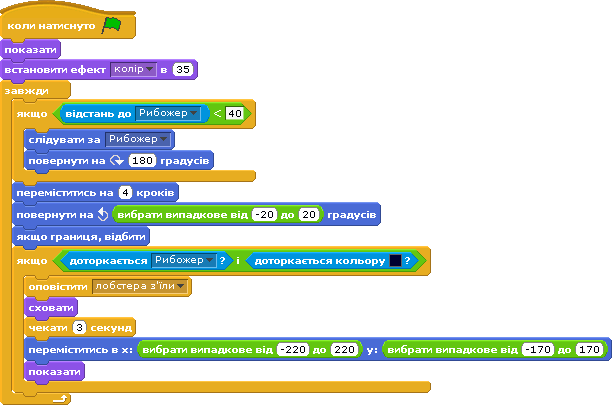Протестуй свій проект
Чи стало тепер важче впіймати здобич? Чи стала гра кращою від цього?
Бонусне завдання 3: Додаємо в гру рахунок
Нецікаво просто поїдати здобич. Як же дізнатись, хто з друзів краще грає у цю гру? Треба створити рахунок. Для цього додамо змінну рахунок через вкладку Змінні.
Де потрібно розмістити блок, який змінює кількість очок?
Переконайтесь, що рахунок повертається до 0 на початку гри. Де слід розмістити відповідний блок?
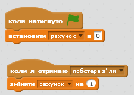Протестуй свій проект
Чи повертається рахунок повертається до 0 на початку гри? Чи збільшується кількісь очок кожного разу, коли Голодна рибина з'їдає здобич?
Бонусне завдання 4: Додаємо в гру зворотній відлік
Всановіть для себе часовий ліміт у грі. Скільки здобичі можна з'їсти за 30 секунд?
Протестуй свій проект
Чи починається відлік на таймері з 30?
Чи з належною швидкістю йде зворотній відлік?
Чи можна ловити здобич, поки працює таймер?
Чи припиняється гра, коли на таймері 0?
Збережи свій проект.